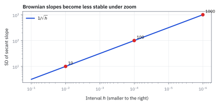
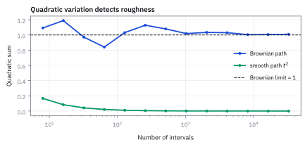
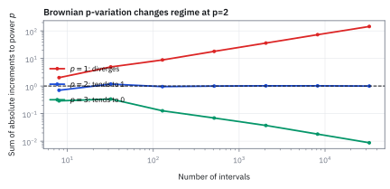

9.5 Strange Properties of Brownian Paths
ยิ่งซูม เส้นทาง Brownian ยิ่งยาวไม่รู้จบและไม่มีความชันให้วัด แต่ผลรวมของการขยับยกกำลังสองกลับนิ่งเท่ากับเวลาพอดี และนั่นคือตัวเลขที่โต๊ะใช้วัดความผันผวน
บนเส้นทางจำลองหนึ่งวันของ SPY ราคา \$520 ความผันผวนรายวัน 1.2% คือ SD \$6.24 ต่อวัน นักวิเคราะห์อยากรู้ว่าราคา “เดินทาง” ไกลแค่ไหนระหว่างวัน จึงรวมขนาดการขยับของทุกแท่ง แท่ง 5 นาทีได้ \$46.28 แท่ง 1 นาทีได้ \$102.33 และทุก 1 วินาทีได้ \$758.69 เขาคิดว่ายิ่งแท่งละเอียดยิ่งใกล้ระยะทางจริง เหมือนวัดความยาวเส้นโค้งด้วยไม้บรรทัดที่สั้นลง ระยะทางจริงคือเท่าไร และควรรายงานตัวเลขอะไรเป็นความผันผวนของวันนี้?
ลองตอบก่อนเปิดเฉลย
ไม่มีระยะทางจริงให้ลู่เข้า ความยาวที่วัดได้โตตามรากของจำนวนแท่ง ละเอียดขึ้น 300 เท่าจาก 5 นาทีเป็น 1 วินาที ความยาวโตราว $\sqrt{300}\approx17$ เท่า และจะโตต่อไม่สิ้นสุด ตัวเลขที่นิ่งคือรากของผลรวมการขยับยกกำลังสอง: \$6.54, \$6.46 และ \$6.23 เข้าใกล้ \$6.24 หรือ 1.2% ของราคา นั่นคือ realized volatility ที่ควรรายงาน
ภาพรวมก่อนลงสูตร
เส้นโค้งที่เคยเรียนใน calculus พอซูมเข้าไปจะเริ่มดูเป็นเส้นตรง จึงมีความชันและความยาวที่วัดได้ เส้นทาง Brownian ไม่เป็นแบบนั้น: ซูมแล้วเจอความขรุขระเท่าเดิมทุกชั้น ความชันยิ่งพุ่ง ความยาวยิ่งโต แต่มีปริมาณหนึ่งที่นิ่งสนิท คือผลรวมของการขยับยกกำลังสอง ซึ่งเท่ากับเวลาที่ผ่านไป เรียกว่า quadratic variation
ทำไมต้องสนใจ เพราะสามข้อนี้คือเหตุผลที่ calculus ธรรมดาใช้กับราคาไม่ได้ และเป็นที่มาของตัวเลขที่โต๊ะ risk ดูทุกวัน หน้านี้พิสูจน์ทั้งสามข้อจากกฎรากที่สองของกติกาสามข้อของ Brownian motion ลองซอย grid บนเส้นทางเดียวให้เห็นกับตา ใช้ของที่นิ่งวัด realized volatility ของ SPY ดูว่าทำไมวัดถี่เกินไปกลับเพี้ยน และปิดด้วยนิสัยที่ขัดสัญชาตญาณที่สุด: เส้นทางกลับมาแน่นอน แต่เวลารอเฉลี่ยเป็นอนันต์
รูปด้านล่างคือการซูมเข้าไปในเส้นทางเดียวสองชั้น ทุกชั้นขยายแกนเวลา 16 เท่าและแกนตั้ง 4 เท่า ($\sqrt{16}$) ตามกฎยืดเวลาแล้วบีบความสูงของ standard Brownian motion
รูป — ซูมเข้าไปสองชั้น ความขรุขระยังเท่าเดิม
ศัพท์ที่ใช้ในหัวข้อนี้
- Quadratic variation
- ค่าที่ผลรวมของการขยับยกกำลังสองลู่เข้าเมื่อซอยช่วงเวลาละเอียดขึ้น สำหรับ SBM คือ $T$ ใช้วัดความขรุขระของเส้นทาง และเป็นฐานของ Itô's lemma
- Total variation
- ผลรวมของขนาดการขยับ $\sum|\Delta W|$ คือความยาวแนวตั้งที่เส้นทางเดิน เส้นเรียบให้ค่าจำกัด เส้นทาง Brownian ให้ค่าที่โตไม่สิ้นสุด
- Nowhere differentiable
- ไม่มีความชันที่จุดใดเลย เส้นทาง Brownian เกือบทุกเส้นเป็นแบบนี้ ความเร็วทันทีของราคาในแบบจำลองนี้จึงไม่มีความหมาย
- Realized variance (RV)
- ผลรวมของผลตอบแทนระหว่างวันยกกำลังสอง ใช้ประมาณ variance ที่เกิดขึ้นจริงของวันนั้น รากของมันคือ realized volatility (ดูrealized volatilityสำหรับข้อมูลจริง)
- Microstructure noise
- ความคลาดเล็ก ๆ ของราคาที่ซื้อขายจริงรอบราคาที่แท้จริง เช่นราคาที่เด้งไปมาระหว่าง bid กับ ask ขนาดราวครึ่งหนึ่งของ spread ข้อมูลยิ่งถี่ ส่วนนี้ยิ่งถูกนับเป็นความผันผวนปลอม
- Hitting time และ reflection principle
- hitting time คือเวลาแรกที่เส้นทางแตะระดับที่กำหนด ใช้ตอบคำถามแบบ “รอให้ราคากลับมาต้องรอนานแค่ไหน” reflection principle คือการพลิกเส้นทางรอบระดับนั้นหลังแตะครั้งแรก ซึ่งใช้คำนวณโอกาสแตะได้ในบรรทัดเดียว
สัญลักษณ์และหน่วย
| สัญลักษณ์ | ความหมาย | หน่วย |
|---|---|---|
| $W_t,\ T$ | SBM และความยาวช่วงที่ดู | รากของเวลา, เวลา |
| $n,\ \Delta t,\ \Delta W_i$ | จำนวนท่อน, ความยาวท่อน $T/n$, การขยับของท่อนที่ $i$ | นับ, เวลา, รากของเวลา |
| $h$ | ความยาวช่วงที่ใช้วัดความชัน | เวลา |
| $Q_n,\ V_n$ | ผลรวมการขยับยกกำลังสอง และผลรวมขนาดการขยับ บน $n$ ท่อน | เวลา, รากของเวลา |
| $r_i,\ RV,\ IV$ | ผลตอบแทนแท่งที่ $i$, realized variance, variance ที่แท้จริงของวัน | สัดส่วน, สัดส่วนยกกำลังสอง |
| $\omega$ | SD ของ noise ในราคาที่สังเกตได้ วัดเป็นสัดส่วนของราคา | สัดส่วน |
| $\tau,\ x$ | เวลาแรกที่แตะระดับ $x$ และระดับเป้าหมาย | ปี, รากของปี |
ขั้นที่ 1 — เส้นเรียบก่อน: ความยาวนิ่ง ผลรวมกำลังสองหายไป
ก่อนจะบอกว่า Brownian แปลก ต้องรู้ก่อนว่าเส้นปกติทำอะไร ให้ $f$ เป็นเส้นที่มีความชันทุกจุด และความชันไม่เกิน $M$ ซอยช่วงยาว $T$ เป็น $n$ ท่อน ท่อนละ $\Delta t$ แล้วดูผลรวมสองแบบ
บรรทัดแรกคือความหมายของความชัน: ในช่วงสั้น การขยับประมาณความชันคูณเวลา บรรทัดที่สองเป็นผลรวมแบบ Riemann ซึ่งลู่เข้าความยาวจริงและไม่เกิน $MT$ ไม่ว่าจะซอยกี่ท่อน
บรรทัดสุดท้ายคือจุดสำคัญ: $\Delta t$ ถูกยกกำลังสอง จึงเหลือ $\Delta t$ หนึ่งตัวค้างหลังรวมกัน ซอยละเอียดขึ้น ผลรวมกำลังสองหายไป เช่นเส้นตรงจาก \$520 ขึ้นไป \$526.24 ทั้งวันมีความยาว \$6.24 ทุก grid แต่ผลรวมกำลังสองเป็น $6.24^2/n$ ซึ่งที่ 78 ท่อนเหลือ 0.50 และที่ 23,400 ท่อนเหลือ 0.0017
ขั้นที่ 2 — ความชันของ Brownian ระเบิดเมื่อซูม
ถามคำถามของ calculus ตรง ๆ: ความชันเฉลี่ยในช่วงสั้น $h$ เป็นเท่าไร และนิ่งลงไหมเมื่อ $h$ หดลง การขยับของ SBM ในช่วง $h$ มี variance $h$ ตัวหาร $h$ เป็นค่าคงที่ จึงออกจาก variance เป็นกำลังสอง
เส้นเรียบทำตรงข้าม: ซูมแล้วความชันนิ่งลงเป็นตัวเลขตัวเดียว ส่วนนี่ซูมเข้าไปร้อยเท่า ความชันเหวี่ยงแรงขึ้นสิบเท่า ไม่ลู่เข้าหาอะไรเลย สองบรรทัดล่างแปลเป็น SPY ที่ SD วันละ \$6.24: ถ้าวัดความชันจากแท่ง 1 นาที (วันละ 390 แท่ง) มันเหวี่ยงระดับ \$123 ต่อวัน วัดจากทุกวินาที (23,400 วินาที) เหวี่ยงระดับ \$955 ต่อวัน ทั้งที่ทั้งวันขยับแค่ราว \$6
ต้นเหตุคือกฎรากที่สอง: การขยับหดลงแค่ $\sqrt h$ แต่ตัวหารหดลง $h$ เต็ม ๆ อัตราส่วนจึงบาน และเพราะการยืดเวลาแล้วบีบความสูงให้ SBM ตัวเดิม ความชันที่ระเบิดจึงเกิดทุกระดับการซูม ซึ่งคือสิ่งที่รูปภาพรวมแสดง ข้อนี้เป็นสัญชาตญาณ การพิสูจน์เต็มว่าไม่มีความชันที่จุดใดเลยยากกว่านี้มาก การนับกำลังของ $n$ ด้านล่างจะให้เหตุผลที่แรงขึ้นอีกขั้น
รูป — ความชันเหวี่ยงแรงขึ้นเมื่อช่วงเวลาหดลง

ขั้นที่ 3 — สี่ก้าวด้วยมือ: ผลรวมหักกันได้ ผลรวมกำลังสองหักกันไม่ได้
ก่อนพิสูจน์เรื่องผลรวมกำลังสอง ลองกรณีที่นับได้: เดินแบบเหรียญสี่ก้าวในช่วง $T=1$ ก้าวละ $\pm\sqrt{\Delta t}=\pm0.5$ ตามกฎรากที่สอง แล้วดูสามเส้นทาง
สามเส้นทางจบคนละที่ คือ 0, 2 และ 1 เพราะก้าวขึ้นกับก้าวลงหักกันได้ แต่ผลรวมกำลังสองเท่ากับ 1 ทุกเส้น เพราะกำลังสองลบเครื่องหมายทิ้ง เหลือ $0.25\times4=T$ นี่คือปริมาณที่ไม่สุ่มบนเส้นทางที่สุ่ม
ก้าวของ Brownian จริงไม่ได้เป็น $\pm0.5$ พอดี แต่มีขนาดเฉลี่ยตามนี้ ผลรวมกำลังสองจึงแกว่งรอบ $T$ เล็กน้อย ขั้นถัดไปพิสูจน์ว่ามันแกว่งน้อยลงเรื่อย ๆ เมื่อซอยละเอียดขึ้น
รูป — สามเส้นทางจบคนละที่ แต่ผลรวมกำลังสองเท่ากันทุกเส้น
ขั้นที่ 4 — ผลรวมกำลังสองเฉลี่ยเท่ากับ $T$ และแทบไม่สุ่มเมื่อซอยละเอียด
ตั้งชื่อ $Q_n$ ให้ผลรวมการขยับยกกำลังสองบน $n$ ท่อนเท่ากัน แล้วหาค่าเฉลี่ยและ variance ของมัน ค่าเฉลี่ยใช้แค่สูตรลัดของ variance ส่วน variance ต้องการ $\mathbb E[Z^4]=3$ ซึ่งได้จากการอินทิเกรตทีละส่วน (ใช้ $\varphi'(z)=-z\varphi(z)$ ของ density ของ Normal)
บรรทัดที่สองถึงสาม: ค่าเฉลี่ยของการขยับเป็นศูนย์ ค่าเฉลี่ยของกำลังสองจึงเท่ากับ variance ซึ่งเท่ากับความยาวท่อนพอดี บวก $n$ ท่อน $n$ หักกันหมด เหลือ $T$ เทียบกับเส้นเรียบที่ให้กำลังสองของท่อนเป็น $\Delta t^2$ ส่วน Brownian ให้ $\Delta t$ ต่างกันหนึ่งกำลัง และนั่นคือความต่างทั้งหมดระหว่างผลรวมที่หายไปกับผลรวมที่เหลือ $T$
บรรทัดที่สี่เขียน $z^4\varphi$ เป็น $z^3$ คูณ $z\varphi=-\varphi'$ แล้วอินทิเกรตทีละส่วน พจน์ขอบเป็นศูนย์เพราะ $\varphi$ ตายเร็วกว่า $z^3$ โต บรรทัดสุดท้ายบวก variance ได้เพราะท่อนที่ไม่ทับกันอิสระ จังหวะชี้ขาดคือ $n$ ท่อนคูณ $1/n^2$ เหลือ $1/n$ ที่ $T=1$ ซอย 100 ท่อนได้ SD $\sqrt{0.02}\approx0.141$ ซอย 10,000 ท่อนเหลือ 0.0141 ของที่สร้างจากความสุ่มล้วน ๆ กลับให้ตัวเลขที่แทบรู้ล่วงหน้า
รูป — ผลรวมกำลังสองแยก Brownian ออกจากเส้นเรียบ

ขั้นที่ 5 — กำลังเท่าไรจึงนิ่ง: ความยาวอนันต์ กำลังสามหาย กำลังสองพอดี
ถ้ากำลังสองให้ $T$ แล้วกำลังอื่นล่ะ? ใช้ $\Delta W_i=\sqrt{\Delta t}\,Z_i$ กับกำลัง $p$ ใด ๆ แล้วนับว่า $n$ เหลือกี่ตัว ต้องใช้ $\mathbb E|Z|=\sqrt{2/\pi}$ (ค่าเฉลี่ยของขนาดการขยับ) และ $\mathbb E|Z|^3=2\sqrt{2/\pi}$ ซึ่งได้จาก $\int_0^\infty z^3e^{-z^2/2}dz=2$ (แทน $u=z^2/2$)
ทุกอย่างขึ้นกับเลขชี้กำลังของ $n$ คือ $1-p/2$ ต่ำกว่าสองผลรวมโตไม่สิ้นสุด เกินสองผลรวมหายไป สองพอดีคือจุดเดียวที่เหลือตัวเลขจำกัดที่ไม่เป็นศูนย์ ที่ $T=1$ ความยาวเฉลี่ยคือ 2.26 ที่ 8 ท่อน และ 144.4 ที่ 32,768 ท่อน
ต่อกับเส้นเรียบได้ข้อสรุปที่แรงกว่าการซูมดูความชัน: เส้นที่ความชันไม่เกิน $M$ มีความยาวไม่เกิน $MT$ ทุก grid แต่ variance ของ $V_n$ คือ $n\cdot\tfrac Tn(1-\tfrac2\pi)$ คงที่ราว $(0.60)^2T$ ขณะที่ค่าเฉลี่ยโตตาม $\sqrt n$ เกือบทุกเส้นทางจึงยาวเกิน $MT$ ใด ๆ เส้นทาง Brownian ไม่มีความชันที่จำกัดได้บนช่วงไหนเลย
รูป — กำลังสองเป็นจุดแบ่งระหว่างโตไม่สิ้นสุดกับหายไป

ขั้นที่ 6 — ลองจริง: ซอย grid บนเส้นทางเดียวของ SPY
โจทย์ให้อะไรมาบ้าง: โค้ดท้ายหน้าสร้างวันจำลองหนึ่งวันของ SPY ราคาทุกวินาที 23,400 วินาที (6.5 ชั่วโมง × 3,600) SD ทั้งวัน \$6.24 คือ 1.2% ของ \$520 แล้วอ่านเส้นทางเดียวกันด้วยแท่งห้าขนาด ค่าคาดหวังของความยาวมาจากผลรวมกำลังหนึ่ง: $6.24\sqrt{2n/\pi}$
| แท่ง | $n$ | ความยาว $\sum|\Delta S|$ | ค่าคาดหวัง | $\sqrt{\sum\Delta S^2}$ | ความชันสูงสุด (ต่อวัน) |
|---|---|---|---|---|---|
| 30 นาที | 13 | \$19.19 | \$17.95 | \$7.25 | \$61 |
| 5 นาที | 78 | \$46.28 | \$43.97 | \$6.54 | \$133 |
| 1 นาที | 390 | \$102.33 | \$98.32 | \$6.46 | \$375 |
| 5 วินาที | 4,680 | \$341.24 | \$340.60 | \$6.22 | \$1,618 |
| 1 วินาที | 23,400 | \$758.69 | \$761.61 | \$6.23 | \$4,195 |
คำตอบ: ความยาวโตจาก \$19 เป็น \$759 ตามค่าคาดหวัง และโตต่อได้ไม่สิ้นสุดถ้าซอยต่อ ความชันสูงสุดโตจาก \$61 เป็น \$4,195 ต่อวัน ส่วนรากของผลรวมกำลังสองเข้าหา \$6.24 และแกว่งน้อยลงตาม variance $2T^2/n$ นี่คือตัวเลขเดียวในตารางที่ควรรายงาน
ตรวจเองใน 10 วินาที: จาก 5 นาทีเป็น 1 วินาที $n$ โต 300 เท่า ความยาวควรโต $\sqrt{300}\approx17.3$ เท่า ได้ $758.69/46.28\approx16.4$ ส่วน SD ของความยาวคงที่ราว $6.24(0.60)\approx\$3.8$ ความต่างจากค่าคาดหวังในทุกแถวจึงไม่เกินราวหนึ่ง SD
ขั้นที่ 7 — ตัวย่อที่ Itô calculus จะใช้ทุกหน้า
ค่าเฉลี่ยและ variance ของ $Q_n$ พิสูจน์แล้วว่า $Q_n$ ลู่เข้า $T$ บรรทัดข้างล่างเป็นนิยามของชื่อและตัวย่อ ไม่ใช่สมการใหม่ ฝั่งซ้ายคือผลที่พิสูจน์แล้ว ฝั่งขวาคือวิธีจดสั้น ๆ ของผลเดียวกันสำหรับท่อนเล็กมาก
$[W]_T$ อ่านว่า quadratic variation ของ $W$ ถึงเวลา $T$ บรรทัดที่สองคือกรณีราคาที่มีความผันผวน $\sigma$: ทุกการขยับคูณ $\sigma$ กำลังสองจึงคูณ $\sigma^2$ ส่วน drift ไม่มีผลเลย เพราะส่วนที่เรียบหายไปแบบเส้นเรียบ บรรทัดที่สามไม่ใช่การคูณจำนวนเล็กจิ๋วสองตัว มันบอกว่าเมื่อบวกกำลังสองของการขยับเล็ก ๆ จำนวนมาก ผลเท่ากับการบวกเวลา ห้ามหารด้วย $dW_t$ หรือถอดรากสองข้างแบบพีชคณิต หน้าทำไม calculus ธรรมดาใช้กับ Brownian motion ไม่ได้จะเริ่มจากบรรทัดนี้
ขั้นที่ 8 — realized volatility ของ SPY หนึ่งวัน และทำไมวัดถี่ช่วย variance แต่ไม่ช่วย drift
โจทย์ให้อะไรมาบ้าง: วันซื้อขาย 390 นาทีแบ่งเป็นแท่ง 5 นาทีได้ 78 แท่ง สมมติว่าผลรวมของ log return ยกกำลังสองทั้ง 78 แท่งคือ 0.000144 ค่าเฉลี่ยของ $Q_n$ บอกว่าผลรวมนี้ประมาณ variance ของทั้งวัน และ variance ของ $Q_n$ บอกว่ามันคลาดได้เท่าไร เทียบกับ drift ซึ่งประมาณด้วยผลรวมของผลตอบแทน (ไม่ยกกำลัง)
คำตอบ: ความผันผวนรายวัน 1.20% รายปี 19.05% ตัวเลขนี้ยังคลาดได้: RV จาก 78 แท่งมี SD ราว 16% ของตัวมันเอง ความผันผวนรายวันจึงคลาดราว $\tfrac12(0.160)(0.012)\approx\pm0.096$ จุด หรือรายปีราว ±1.5 จุด (รากของตัวเลขขยับครึ่งหนึ่งของสัดส่วนที่ตัวเลขขยับ) ส่วน drift เป็นอีกเรื่อง: ผลรวมของผลตอบแทนหักกันเหลือแค่ราคาปลายลบราคาต้น ไม่ว่าจะซอยกี่แท่ง ข้อมูลหนึ่งปีของ SPY จึงให้ค่าประมาณ drift ที่คลาดได้หนึ่ง SD ราว 19% ต่อปี ใหญ่กว่า drift 8% ที่อยากวัดเสียอีก วัดถี่ขึ้นช่วยความผันผวน เพราะกำลังสองไม่หักกัน แต่ไม่ช่วย drift เลย ต้องรอให้ปีผ่านไปมากขึ้นเท่านั้น
ตรวจเองใน 10 วินาที: $0.012^2=0.000144$ และ $1.2\times16\approx19.2$ ใกล้ 19.05
ขั้นที่ 9 — วัดถี่เกินไป: noise ถูกนับเป็นความผันผวน และความถี่ที่ดีที่สุด
RV ยิ่งซอยละเอียดยิ่งแม่น แล้วทำไมไม่วัดทุกวินาที? เพราะราคาที่เห็นไม่ใช่ราคาที่แท้จริง ราคาที่ซื้อขายเด้งระหว่าง bid กับ ask ให้ log ราคาที่เห็นคือราคาจริงบวก noise $\epsilon_i$ ที่อิสระกันทุกแท่ง ค่าเฉลี่ยศูนย์ SD $\omega$ (ราวครึ่งหนึ่งของ spread หารด้วยราคา) แล้วดูว่า RV คาดหวังเป็นเท่าไร และ $n$ เท่าไรให้ความคลาดรวมน้อยที่สุด
บรรทัดที่สองกระจายกำลังสอง พจน์ไขว้หายหมดเพราะ noise อิสระจากราคาจริงและจากกัน เหลือ variance ของ noise สองก้อน บรรทัดที่สามบวก $n$ แท่ง: ส่วนเกินโตตามจำนวนแท่ง ยิ่งถี่ยิ่งพอง ตรงข้ามกับความแม่นที่ได้จากการซอย บรรทัดที่สี่รวมสองแรงนี้เป็นความคลาดสัมพัทธ์ยกกำลังสอง: bias กำลังสองโตตาม $n^2$ ส่วน variance $2/n$ หดลง บรรทัดสุดท้ายหาค่าต่ำสุดด้วยการตั้งอนุพันธ์เป็นศูนย์: $2a^2n-2/n^2=0$ เมื่อ $a=2\omega^2/IV$ จึงได้ $n^3=1/a^2$
ใส่ตัวเลข SPY spread 1 เซนต์ที่ \$520 ได้ $\omega\approx9.6\times10^{-6}$ และ $n^*\approx8{,}460$ คือแท่งราว 2.8 วินาที ความคลาดราว 1.9% และทุกวินาทีส่วนเกินแค่ 3.0% ของ $IV=0.000144$ แต่หุ้นราคา \$50 spread 5 เซนต์ได้ $\omega=0.0005$ ทุกวินาที RV พองเป็น 82 เท่า ความผันผวนรายวันดูเป็น 10.9% แทน 1.2% แท่ง 5 นาทีเกิน 27% แท่ง 15 นาทีเกิน 9% และ $n^*\approx44$ คือแท่งราว 9 นาที ซึ่งยังคลาดราว 26%
รูป — ความคลาดของ RV ตามขนาดแท่ง: noise ทางซ้าย ความสุ่มทางขวา
ขั้นที่ 10 — กลับมาแน่นอน แต่เวลารอเฉลี่ยเป็นอนันต์
นิสัยสุดท้ายขัดสัญชาตญาณที่สุด ถามว่า SBM ที่เริ่มที่ 0 จะแตะระดับ $x\gt0$ เมื่อไร เครื่องมือคือ reflection principle (รูปด้านล่าง): ทุกเส้นทางที่แตะ $x$ ก่อนเวลา $t$ แล้วจบต่ำกว่า $x$ จับคู่ได้หนึ่งต่อหนึ่งกับเส้นทางที่พลิกส่วนหลังแตะรอบระดับ $x$ แล้วจบสูงกว่า $x$ ด้วยโอกาสเท่ากัน เพราะการขยับหลังเวลาแตะสมมาตร เส้นทางที่จบสูงกว่า $x$ ล้วนแตะ $x$ มาแล้ว (เส้นทางต่อเนื่อง) จึงได้บรรทัดแรก
โอกาสแตะไต่ขึ้นหาหนึ่ง: 31.7%, 92.0%, 99.2% จึงแตะแน่นอนในที่สุด แต่หางที่เหลือหดช้ามากตาม $1/\sqrt t$ บรรทัดที่ห้าใช้ว่าเมื่อ $t\ge1$ ช่วงอินทิเกรตสั้นกว่า 1 และ $\varphi$ ในช่วงนั้นไม่ต่ำกว่า $\varphi(1)\approx0.242$ ค่าเฉลี่ยของเวลาคือพื้นที่ใต้หางนี้ ซึ่ง $\int_1^\infty t^{-1/2}dt$ ไม่มีค่าจำกัด
อ่านเป็นเงิน: ถ้าพอร์ตห่างจุดคุ้มทุนหนึ่ง SD ของปี เช่นหุ้นที่ผันผวน 18% ต่อปีลงไปราว 18% ในแบบจำลองที่ไม่มี drift โอกาสกลับทุนภายในหนึ่งปีคือ 31.7% ภายในร้อยปี 92.0% และเวลารอเฉลี่ยเป็นอนันต์ “ถือไว้เดี๋ยวก็กลับมา” จึงไม่ใช่แผน (เรื่องนี้กลับมาอีกครั้งในdrawdown และการลดความเสี่ยง)
รูป — reflection principle: พลิกเส้นทางหลังแตะระดับครั้งแรก
ความผิดที่ดูเหมือนความละเอียด
ใช้ความยาวหรือความชันเป็นตัววัดความผันผวน: ตัวเลขทั้งสองขึ้นกับขนาดแท่งที่เลือกเอง ในวันจำลองของ SPY ความยาวเปลี่ยนจาก \$19 เป็น \$759 บนเส้นทางเดียวกัน สองทีมที่ใช้แท่งต่างกันจะได้ตัวเลขต่างกันหลายสิบเท่าแล้วเถียงกันไม่จบ
วัด RV ถี่ที่สุดเท่าที่ข้อมูลมี: หุ้นราคา \$50 spread 5 เซนต์ วัดทุกวินาทีได้ความผันผวนรายวัน 10.9% แทน 1.2% ความถี่ที่เหมาะขึ้นกับ spread เทียบกับความผันผวน ไม่ใช่ยิ่งถี่ยิ่งดี และหุ้นที่ซื้อขายน้อยกว่าหนึ่งครั้งต่อ 5 นาที ใช้แท่ง 1 นาทีไม่ได้เลยเพราะแท่งส่วนใหญ่ไม่มีราคาใหม่
คิดว่าข้อมูลถี่ขึ้นช่วยประมาณ drift: ผลรวมของผลตอบแทนหักกันเหลือราคาปลายลบราคาต้น ข้อมูลรายวินาทีหนึ่งปีจึงบอก drift ได้แม่นเท่าราคาสองจุด ความคลาด 19% ต่อปีของ SPY ลดได้ด้วยการรอหลายปีเท่านั้น
อ่าน $(dW_t)^2=dt$ เป็นพีชคณิต: มันย่อผลของค่าเฉลี่ยและ variance ของ $Q_n$ ใช้ได้เมื่อบวกกันหลายท่อนเท่านั้น และ $[W]_T=T$ เป็นของ SBM ที่ $\sigma=1$ ราคาที่มีความผันผวน $\sigma$ มี quadratic variation $\sigma^2T$
ใช้ทำอะไรบนโต๊ะจริง
realized volatility จากแท่ง 5 นาทีเป็นตัวเลขที่โต๊ะ risk และโต๊ะ option ดูทุกวัน ใช้เทียบกับ implied volatility ที่อ่านจากราคา straddle (โจทย์ในหน้า standard Brownian motion) และใช้ชำระvariance swap ซึ่งจ่ายตามผลรวมกำลังสองของผลตอบแทนรายวันที่เกิดจริงตลอดอายุสัญญา การเลือกความถี่ตามสภาพคล่องของแต่ละสินทรัพย์คือการแก้สมการ $n^*$ ข้างบนในทางปฏิบัติ ส่วนที่มาของ noise คือmarket microstructure
ผลรวมกำลังสองที่ไม่หายไปคือเหตุผลที่ calculus ธรรมดาใช้กับราคาไม่ได้ ใน chain rule ปกติ พจน์กำลังสองของการขยับถูกทิ้งเพราะมันหายไปแบบเส้นเรียบ แต่ของ Brownian ไม่หาย Itô's lemma จะเก็บพจน์นั้นไว้
โจทย์ตรวจความเข้าใจ
1. ถ้าวัด SPY ด้วยแท่ง 30 นาที 13 แท่ง ได้ผลรวม log return ยกกำลังสอง 0.000150 ความผันผวนรายวันและรายปีเป็นเท่าไร และตัวเลขนี้คลาดได้มากกว่าแท่ง 5 นาทีแค่ไหน?
เฉลย
รายวัน $\sqrt{0.000150}\approx1.225\%$ รายปี $1.225\%\times\sqrt{252}\approx19.44\%$ SD สัมพัทธ์ของ RV คือ $\sqrt{2/13}\approx39\%$ เทียบกับ 16% ของ 78 แท่ง แท่งน้อยจึงคลาดมากกว่าราวสองเท่าครึ่ง นี่คือเหตุผลที่ต้องใช้แท่งเล็ก จนกว่า noise จะเริ่มชนะ
2. ในวันจำลองของ SPY ถ้าวัดด้วยแท่ง 10 วินาที (2,340 แท่ง) ความยาวคาดหวังเป็นเท่าไร และยาวกว่าแท่ง 5 นาทีกี่เท่า?
เฉลย
$6.24\sqrt{2(2{,}340)/\pi}\approx\$240.84$ ยาวกว่าค่าคาดหวังของแท่ง 5 นาที \$43.97 อยู่ $\sqrt{2{,}340/78}=\sqrt{30}\approx5.48$ เท่า ส่วนรากของผลรวมกำลังสองยังคาดว่าราว \$6.24 เท่าเดิม
3. หุ้นที่ผันผวน 18% ต่อปี ไม่มี drift ต้องขึ้นหนึ่ง SD ของปีจึงถึงเป้า โอกาสแตะเป้าภายใน 4 ปีและ 25 ปีเป็นเท่าไร?
เฉลย
ใช้ $P(\tau\le t)=2\Phi(-x/\sqrt t)$ กับ $x=1$: ภายใน 4 ปี $2\Phi(-1/2)\approx61.7\%$ ภายใน 25 ปี $2\Phi(-1/5)\approx84.1\%$ รอนานขึ้นหกเท่ากว่า โอกาสเพิ่มแค่ 22 จุด และเวลารอเฉลี่ยยังเป็นอนันต์
คำนวณซ้ำด้วย JavaScript
เปิดดูโค้ด
// Simpson's rule on [a, b] with an even number of pieces.
function simpson(f, a, b, n = 20000) {
const h = (b - a) / n;
let s = 0;
for (let i = 0; i <= n; i++) s += (i === 0 || i === n ? 1 : i % 2 ? 4 : 2) * f(a + i * h);
return s * h / 3;
}
const phi = z => Math.exp(-z * z / 2) / Math.sqrt(2 * Math.PI);
const Phi = x => 0.5 + Math.sign(x) * simpson(phi, 0, Math.abs(x), 4000);
// E|Z|^p for a standard Normal, by integration.
const absMoment = p => simpson(z => 2 * z ** p * phi(z), 0, 12);
// mulberry32 + Box-Muller: seeded standard Normals.
function normals(seed) {
let a = seed >>> 0, spare = null;
const u = () => {
a = (a + 0x6D2B79F5) >>> 0;
let t = Math.imul(a ^ (a >>> 15), a | 1);
t ^= t + Math.imul(t ^ (t >>> 7), t | 61);
return (((t ^ (t >>> 14)) >>> 0) + 0.5) / 4294967296;
};
return () => {
if (spare !== null) { const z = spare; spare = null; return z; }
const r = Math.sqrt(-2 * Math.log(u())), angle = 2 * Math.PI * u();
spare = r * Math.sin(angle);
return r * Math.cos(angle);
};
}
// One simulated trading day, one price per second, in dollars: daily SD sdDay spread over n seconds.
function simulateDay(S0, sdDay, n, seed) {
const z = normals(seed), step = sdDay / Math.sqrt(n), path = [S0];
for (let i = 0; i < n; i++) path.push(path[i] + step * z());
return path;
}
// Read the same path every `every` points: sum of |moves|, root of sum of squares, sum of |moves|^3, steepest slope.
function gridStats(path, every) {
const n = path.length - 1;
if (n % every !== 0) throw new RangeError('The grid step must divide the path length');
let abs = 0, sq = 0, cube = 0, steep = 0;
const h = every / n; // fraction of a day per step
for (let i = every; i <= n; i += every) {
const d = path[i] - path[i - every];
abs += Math.abs(d); sq += d * d; cube += Math.abs(d) ** 3;
steep = Math.max(steep, Math.abs(d) / h);
}
return {steps: n / every, length: abs, rootSumSquares: Math.sqrt(sq), sumCubes: cube, maxSlope: steep};
}
// Expected sum of |W increments|^p on n equal steps over time T: T^(p/2) E|Z|^p n^(1 - p/2).
const expectedPowerSum = (p, n, T = 1) => T ** (p / 2) * absMoment(p) * n ** (1 - p / 2);
// Microstructure noise: observed return = true return + e_i - e_(i-1), so E[RV] = IV + 2 n omega^2.
const noisyRV = (iv, n, omega) => iv + 2 * n * omega * omega;
// Relative error of RV: squared bias from noise plus sampling variance 2/n; and the n that minimises it.
const rvError = (iv, n, omega) => Math.sqrt((2 * n * omega * omega / iv) ** 2 + 2 / n);
const bestN = (iv, omega) => (2 * omega * omega / iv) ** (-2 / 3);
// Reflection principle: chance that W started at 0 has touched level x by time t.
const hitBy = (x, t) => 2 * Phi(-x / Math.sqrt(t));
const sdDay = 520 * 0.012, secondsPerDay = 390 * 60;
const path = simulateDay(520, sdDay, secondsPerDay, 951);
const grids = {sec1: 1, sec5: 5, min1: 60, min5: 300, min30: 1800};
const day = Object.fromEntries(Object.entries(grids).map(([k, e]) => [k, gridStats(path, e)]));
const iv = 0.000144, spy = 0.005 / 520, small = 0.025 / 50;
const best = omega => { const n = bestN(iv, omega); return {n, secondsPerBar: secondsPerDay / n, error: rvError(iv, n, omega)}; };
console.log(JSON.stringify({
sdDay, secondsPerDay, day,
expectedLength: Object.fromEntries(Object.entries(grids).map(([k, e]) => [k, sdDay * expectedPowerSum(1, secondsPerDay / e)])),
moments: {absZ: absMoment(1), absZ3: absMoment(3), z4: absMoment(4)},
slopeSD: {h2: 1 / Math.sqrt(1e-2), h4: 1 / Math.sqrt(1e-4), h6: 1 / Math.sqrt(1e-6),
minute: sdDay * Math.sqrt(390), second: sdDay * Math.sqrt(secondsPerDay)},
qvSD: {n100: Math.sqrt(2 / 100), n10000: Math.sqrt(2 / 10000)},
powerSums: [1, 2, 3].map(p => [8, 32768].map(n => expectedPowerSum(p, n))),
rv: {daily: Math.sqrt(iv), annual: Math.sqrt(iv * 252), relSD: Math.sqrt(2 / 78), volSD: Math.sqrt(iv) * Math.sqrt(2 / 78) / 2,
driftSDperYear: Math.sqrt(iv * 252)},
noise: {spySecond: noisyRV(iv, secondsPerDay, spy) / iv - 1, smallSecond: noisyRV(iv, secondsPerDay, small) / iv,
smallSecondVol: Math.sqrt(noisyRV(iv, secondsPerDay, small)), small5min: noisyRV(iv, 78, small) / iv - 1,
small15min: noisyRV(iv, 26, small) / iv - 1, bestSPY: best(spy), bestSmall: best(small)},
hitting: {t1: hitBy(1, 1), t100: hitBy(1, 100), t10000: hitBy(1, 10000), bound: 2 * phi(1),
years4: hitBy(1, 4), years25: hitBy(1, 25)},
exercise: {rv13: {daily: Math.sqrt(0.00015), annual: Math.sqrt(0.00015 * 252), relSD: Math.sqrt(2 / 13)},
tenSecondLength: sdDay * expectedPowerSum(1, 2340)}
}));สิ่งที่ควรตอบได้หลังอ่าน
- ความชันเฉลี่ยในช่วง $h$ มี SD $1/\sqrt h$ ซูมเข้าไปร้อยเท่า ความชันเหวี่ยงแรงขึ้นสิบเท่า และภาพที่ซูมขรุขระเท่าภาพเต็ม
- ผลรวมการขยับยกกำลังสองมีค่าเฉลี่ย $T$ และ variance $2T^2/n$ จึงนิ่งที่ $T$ เมื่อซอยละเอียด ขณะที่เส้นเรียบให้ศูนย์
- ผลรวมกำลัง $p$ โตตาม $n^{1-p/2}$: ความยาวโตไม่สิ้นสุด กำลังสามหายไป กำลังสองพอดี และความยาวที่ไม่จำกัดแปลว่าไม่มีความชันที่จำกัด
- RV จาก 78 แท่ง 5 นาที 0.000144 ให้ 1.20% ต่อวัน 19.05% ต่อปี คลาดได้ราว ±1.5 จุดต่อปี วัดถี่ขึ้นช่วย variance แต่ไม่ช่วย drift และ noise เพิ่ม $2n\omega^2$ จนมีความถี่ที่ดีที่สุด $n^*=(2\omega^2/IV)^{-2/3}$
- SBM แตะระดับหนึ่งแน่นอนในที่สุด (โอกาส $2\Phi(-x/\sqrt t)$ จาก reflection principle) แต่เวลารอเฉลี่ยเป็นอนันต์
หน้าถัดไป geometric Brownian motion เอา Brownian motion ไปเป็นเลขชี้กำลังของราคา ได้แบบจำลองที่ราคาติดลบไม่ได้และผลตอบแทนเป็นสัดส่วน ส่วนผลรวมกำลังสองของหน้านี้จะกลับมาเป็นแกนของ Itô's lemma